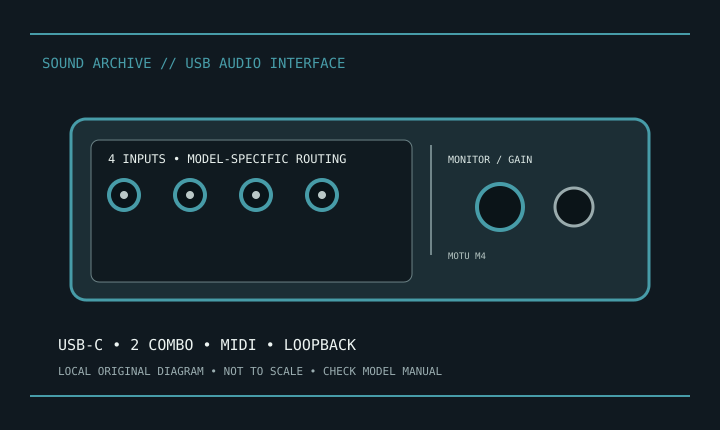

[ INDIVIDUAL MODEL // SOUND HARDWARE ]
MOTU M4
MOTU M4 is the 4-in/4-out USB-C member of the M Series. Two combo mic/line/instrument inputs are accompanied by two line inputs; verify exact routing in the M4 guide.

Model-specific specifications
| Product | MOTU M4 USB audio interface. |
|---|---|
| Host | USB-C connector; USB 2.0 audio interface, bus-powered as documented. |
| Inputs | Two XLR/TRS combo mic/line/instrument inputs and two 1/4-inch balanced line inputs. |
| Outputs | Four balanced 1/4-inch line outputs plus mirrored RCA output pair and stereo headphone output; routing is described in the manual. |
| Conversion | MOTU lists 24-bit, up to 192 kHz; main outputs use ESS Sabre32 DAC technology per MOTU. |
| MIDI | 5-pin DIN MIDI input and output. |
| Features/software | Direct monitoring, color LCD metering and driver loopback; loopback/support depends on host driver and OS. |
| Phantom | Switchable +48 V on documented mic inputs. |
Compatibility & preservation
Save the M4-specific driver and routing notes; record loopback channel assignment, sample rate and phantom state. Bus power depends on host/connection. Do not confuse M4 output pairs or mirrored RCA with additional independent converters.
- Photograph the model/revision and connector panel before service.
- Retain manufacturer manual, driver/firmware package and known-working host/routing configuration.
- Follow documented input levels, cabling and phantom-power precautions.
Manufacturer sources
- MOTU M4 — manufacturer product informationModel-specific manufacturer product page.
- Manufacturer manual and supportOfficial manual/download source; confirm OS and model revision.